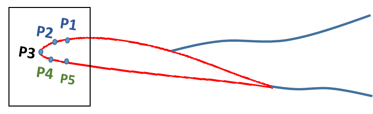
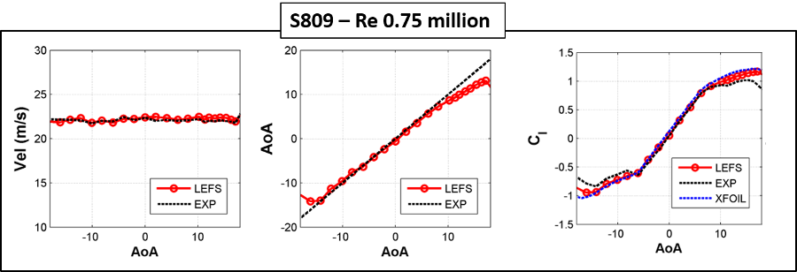
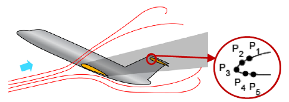
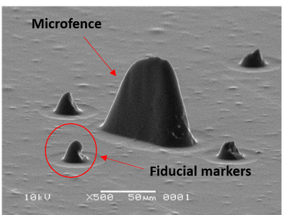
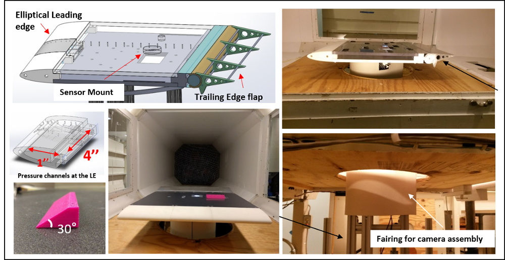
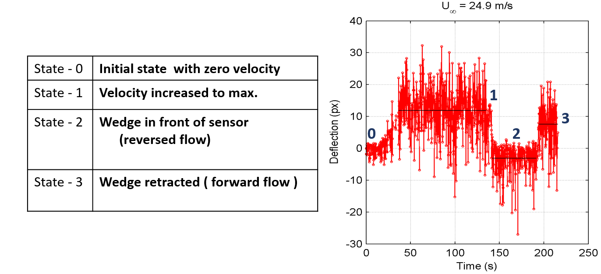

Research
Leading-Edge Flow Sensing

- The identification of inflow air data quantities such as airspeed, angle of attack, and local lift coefficient on various sections of a wing or rotor blade provides the capability for load monitoring, aerodynamic diagnostics, and control on devices ranging from air vehicles to wind turbines.
- In this research, a novel leading-edge flow sensing (LEFS) algorithm was developed for the determination of the air data parameters using surface pressures measured at a few ports in the vicinity of the leading edge of a wing/blade section.
- Real-time determination of the section operating condition can be used to effectively adapt wing geometry using cruise flap or other geometry changes. Apart from routine aircraft operations, this information could be useful in wind tunnel or flight tests of prototype configurations for deducing the aerodynamic causes behind flight behaviors.
- The LEFS algorithm is successful in predicting the aerodynamic operating state variables such as angle of attack, airspeed, stagnation-point location, and local lift coefficient on wing/rotor blade sections using just five leading-edge pressure measurements.
- The effectiveness of the LEFS technique has been assessed by testing the algorithm on wind tunnel data for steady flow and rotating blade data, obtained from test campaigns conducted by NREL. (Some results for S809 airfoil shown below).
- Flow-field sensing on the horizontal tail from a few surface pressure measurements can be used to detect the loss of longitudinal stability of the tail in the wing wake and allow real-time estimates of the control surface performance.
- Preliminary wind tunnel tests have been conducted in the NC State subsonic wind tunnel by applying the algorithm to an airfoil model in the wake of a cylindrical body placed upstream.
- Unsteady flow on airfoils is often characterized by leading-edge-vortex (LEV) formation.
- The shedding, growth and detachment of LEV strongly affect the forces and moments on the airfoil.
- The suction coefficient (Cs) estimated by the LEFS technique (using just 5 pressure inputs in the vicinity of the leading edge and without any prior calibration) has been successful in detecting surface signatures for leading edge vortex formation, growth, and detachment.
- In the following video, the minimum Cs values mark the onset of vortex formation and maximum values correspond to vortex pinch-off. The Cs determined by the LEFS method compares well with the CFD data.
- Bio-inspired artificial hair sensors have the potential to develop a new class of techniques for controlling aerial systems.
- The mechanical response of microstructures can potentially be incorporated in the feedback loop while designing control schemes to achieve enhanced flight performance similar to natural fliers - especially in MAVs where conventional sensors demand too much power and space and may not have the fidelity for aerodynamic control feedback.
- In this work, elastic microfence structures were generated and tested under different flow conditions on a flat plate setup. The microfences were fabricated by our collaborators at NASA Langley Research Center and the response of the microfences was studied by subjecting the sensing elements to different flow conditions in the NCSU subsonic wind tunnel. The response of the microfences was recorded via optical microscopy.
- Wind tunnel facilities are prone to vibrations. Although measures were taken in designing the current experimental setup to minimize any mechanical vibrations, flow-induced vibrations were still prevalent during the experimentation.
- The vibrations result in relative motion between the camera setup and microfence structures which makes the measurement of microfence tip deflection a challenging task.
- Intensity-based image registration technique (from Image processing toolbox in MATLAB) was used to transform the video frames and correct the relative motion induced in the video due to vibration.
- To evaluate the response of the elastic microfence structures, the sensing elements were installed on a flat plate model and subjected to real flow conditions in the subsonic wind tunnel at North Carolina State University (NCSU).
- A (0.66 m chord) flat plate model with an elliptical leading edge was fabricated.
- There were integral pressure taps in the 3D printed leading edge and in the upper surface of the acrylic at plate.
- The model also had a trailing edge flap that could be adjusted to control the stagnation point at the leading edge of the model.
- A test case was designed to characterize the response of the microfence structures under reverse flow conditions.
- The objective was to initially subject the sensors to forward flow and subsequently create flow reversal at the location of the microstructures to analyze their response.
- The change in flow direction was achieved by placing a bluff body in front of the microstructures. A 3D printed wedge shaped body was fabricated and installed on the at plate using a linear actuator setup.
- The following video shows the microfence response at 4 critical states as shown below. (The direction of freestream velocity is from left to right).

Applications
The application of the LEFS technique has been investigated for the following flow scenarios :
Onset of Deep Stall

Unsteady Aerodynamics
Aerodynamic Flow Sensing with Elastic Microfence Structures

Image stabilization
Stabilized Video
Wind Tunnel Tests

Detection of Reversed Flow
